太微垣(Supreme Palace Enclosure)
- 右垣(Right wall)：右执法(Right law administrator)，西上将(First western general)，西次将(Second western general)，西次相(Second western minister)，西上相(First western minister)
- 左垣(Left wall)：左执法(Left law administrator)，东上相(First eastern minister)，东次相(Second eastern minister)，东次将(Second eastern general)，东上将(First eastern general)
- 三台(Three steps)：上台(Upper step)，中台(Middle step)，下台(Lower step)
- 五帝座(Seats of the five emperors)，五诸侯(Five feudal kings)，九卿(Nine senior officers)，三公(Three excellencies)，内屏(Inner screen)，郎位(Official of imperial guard)，常陈(Imperial guards)，少微(Junior officers)，长垣(Long wall)，灵台(Astronomical observatory)，明堂(Cosmological temple)
- 太子(Crown prince)，从官(Retinue)，幸臣(Officer of honor)，郎将(Captain of the bodyguards)，虎贲(Emperor's bodyguard)，谒者(Usher of the court)
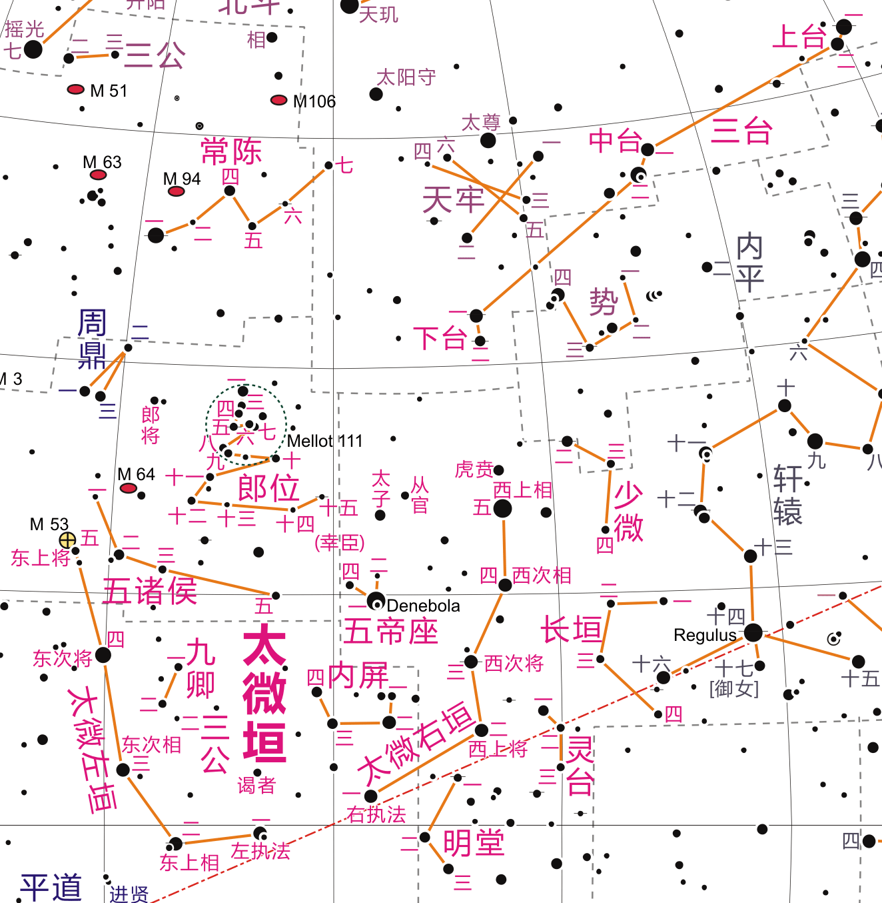
天市垣(Heavenly Market Enclosure)
- 右垣(Right wall)：河中(HEZHONG)，河间(HEJIAN)，晋(JIN)，郑(ZHENG)，周(ZHOU)，秦(QIN)，蜀(SHU)，巴(BA)，梁(LIANG)，楚(CHU)，韩(HAN)
- 左垣(Left wall)：魏(WEI)，赵(ZHAO)，九河(JIUHE)，中山(ZHONGSHAN)，齐(QI)，吴越(WUYUE)，徐(XU)，东海(DONGHAI)，燕(YAN)，南海(NANHAI)，宋(SONG)
- 宦者(Eunuch official)，斗(Dipper for liquids)，斛(Dipper for solids)，列肆(Jewel market)，车肆(Commodity market)，市楼(Municipal office)，宗正(Official for royal clan)，宗人(Official of religious ceremonies)，宗(Patriarchal clan)，帛度(Textile ruler)，屠肆(Butcher's shops)，天纪(Celestial Discipline)，女床(Woman's bed)，贯索(Coiled thong)，七公(Seven excellencies)
- 帝座(Emperor's seat)，候(Astrologer)
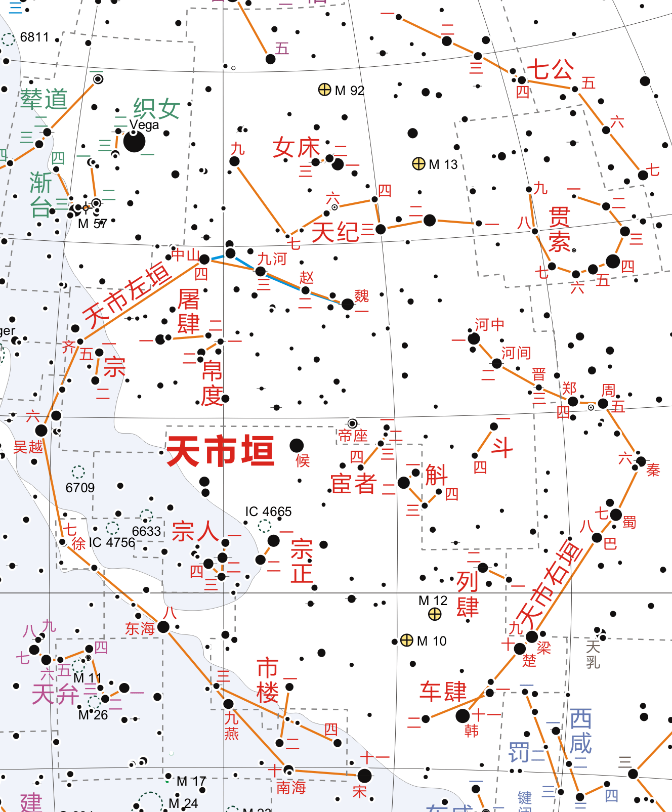
东方苍龙(Azure Dragon of the East)
角宿(Horn Mansion)
- 平道(Flat road)，天田(Celestial farmland)，周鼎(Tripod of the ZHOU)，天门(Celestial gate)，平(Judging)，库楼(Arsenal)，柱(Pillars)，衡(Railings)，南门(Southern gate)
- 进贤(Recommending virtuous man)
 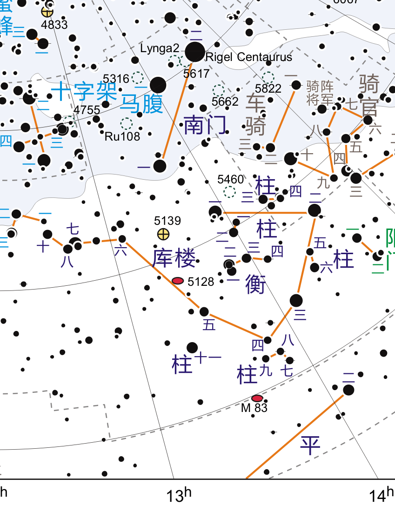
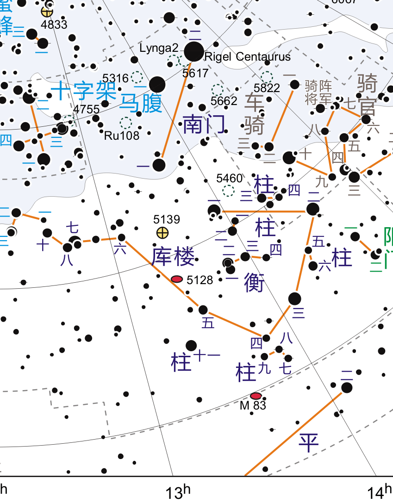
亢宿(Neck Mansion)
- 右摄提(Right conductor)，左摄提(Left conductor)，折威(Executions)，顿顽(Trials)，阳门(Gate of YANG)
- 大角(Great horn)
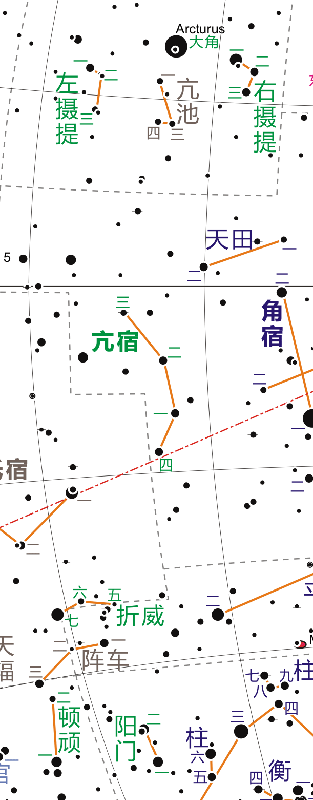
氐宿(Root Mansion)
- 亢池(Boats and lake)，帝席(Mattress of the emperor)，梗河(Celestial lance)，天辐(Celestial spokes)，阵车(Battle chariots)，骑官(Imperial guards)，车骑(Chariots and cavalry)
- 招摇(Twinkling indicator)，天乳(Celestial milk)，骑阵将军(Chariot and Cavalry general)
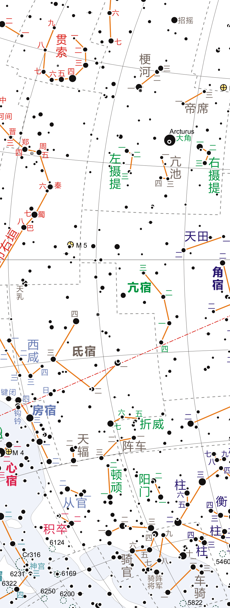
房宿(Room Mansion)
- 钩钤(Lock)，罚(Punishment)，西咸(Eastern door)，东咸(Western door)，从官(Retinue)
- 键闭(Door bolt)，日(Sun)
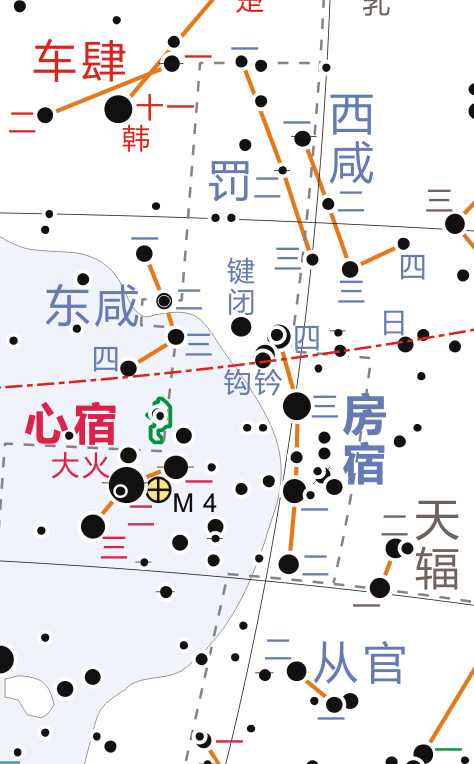
心宿(Heart Mansion)
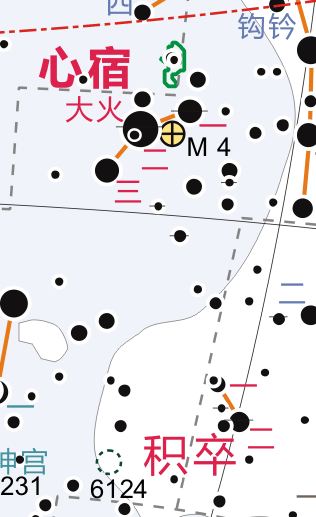
尾宿(Tail Mansion)
- 天江(Celestial river)，龟(Tortoise)
- 神宫(Changing room)，傅说(FUYUE)，鱼(Fish)
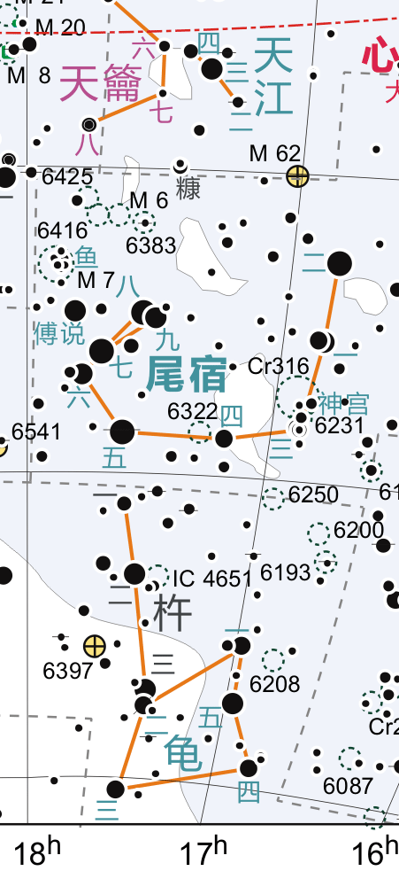
箕宿(Winnowing-basket Mansion)
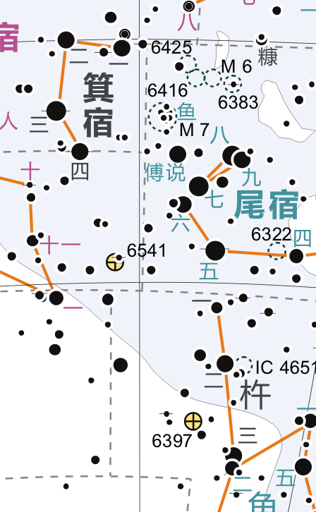
北方玄武(Murky Warrior of the North)
斗宿(Dipper Mansion)
- 天籥(Celestial keyhole)，天弁(Market officer)，建(Establishment)，天鸡(Celestial cock)，狗(Dog)，狗国(Territory of dogs)，天渊(Celestial spring)，鳖(River turtle)
- 农丈人(Peasant)
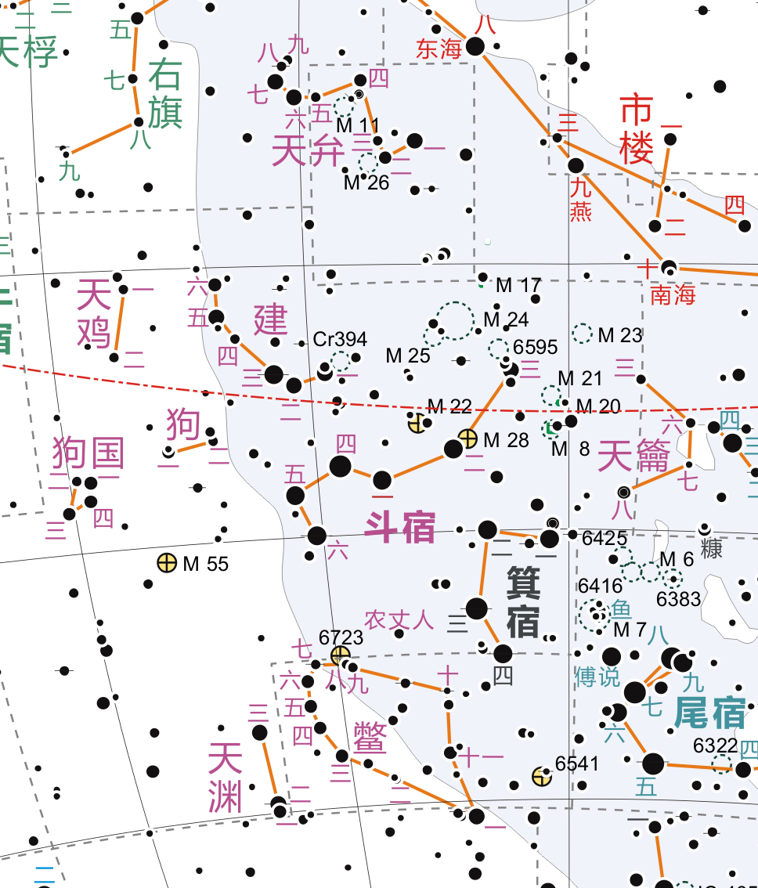
牛宿(Ox Mansion)
- 天桴(Celestial drumstick)，河鼓(Drum at the river)，右旗(Right flag)，左旗(Left flag)，织女(Weaving girl)，渐台(Clepsydra terrace)，辇道(Imperial passageway)，罗堰(Networks of dykes)，天田(Celestial farmland)，九坎(Nine water wells)
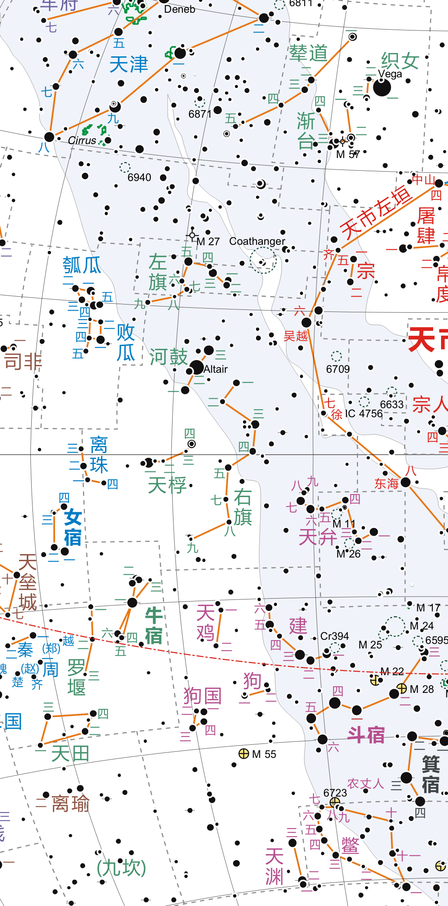
女宿(Girl Mansion)
- 十二国(Twelve countries)：周(ZHOU)，秦(QIN)，代(DAI)，赵(ZHAO)，越(YUE)，齐(QI)，楚(CHU)，郑(ZHENG)，魏(WEI)，韩(HAN)，晋(JIN)，燕(YAN)
- 离珠(Pearls on ladies' wear)，败瓜(Rotten gourd)，瓠瓜(Good gourd)，天津(Celestial ford)，奚仲(XIZHONG)，扶筐(Basket for mulberry leaves)
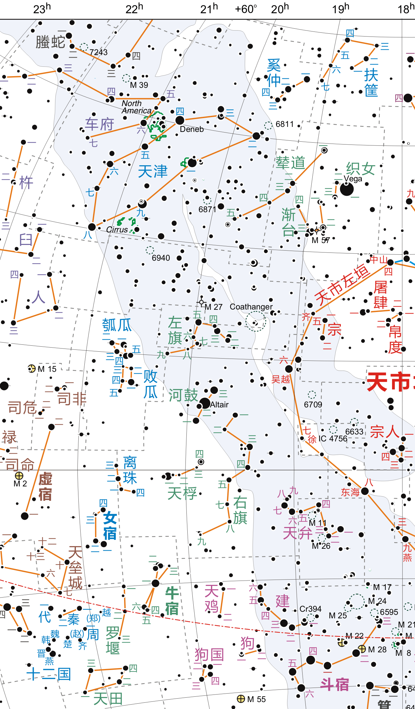
虚宿(Emptiness Mansion)
- 司命(Deified judge of life)，司禄(Deified judge of rank)，司危(Deified judge of disaster and good fortune)，司非(Deified judge of right and wrong)，哭(Crying)，泣(Weeping)，离瑜(Jade ornament on ladies' wear)，天垒城(Celestial ramparts)，败臼(Decayed Mortar)
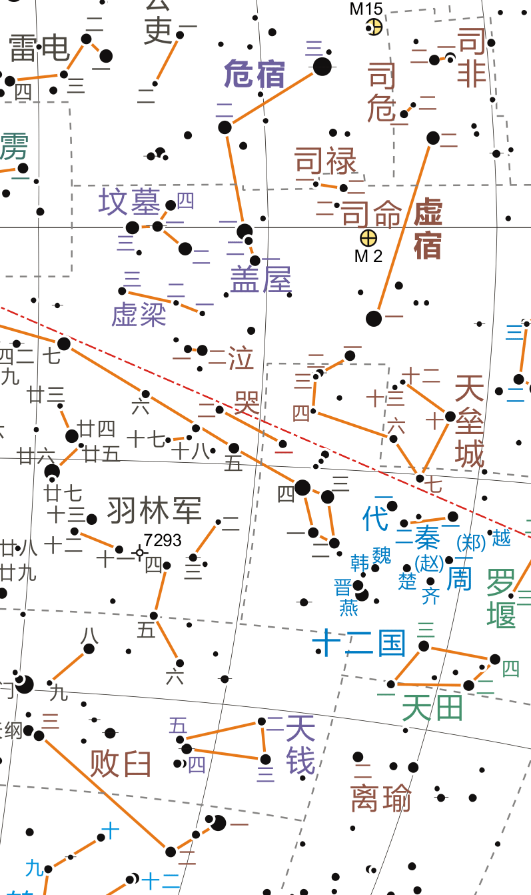
危宿(Rooftop Mansion)
- 坟墓(Tomb)，盖屋(Roofing)，虚梁(Temple)，天钱(Celestial money)，人(Humans)，杵(Pestle)，臼(Mortar)，车府(Big yard for chariots)，造父(ZAOFU)，天钩(Celestial hook)
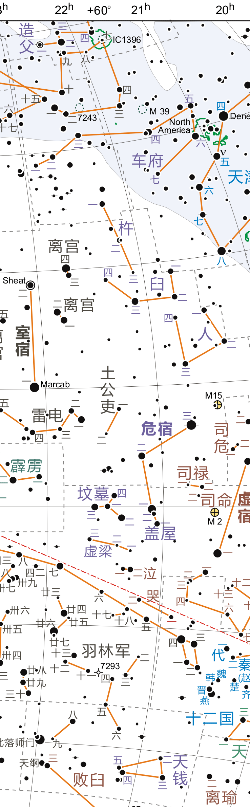
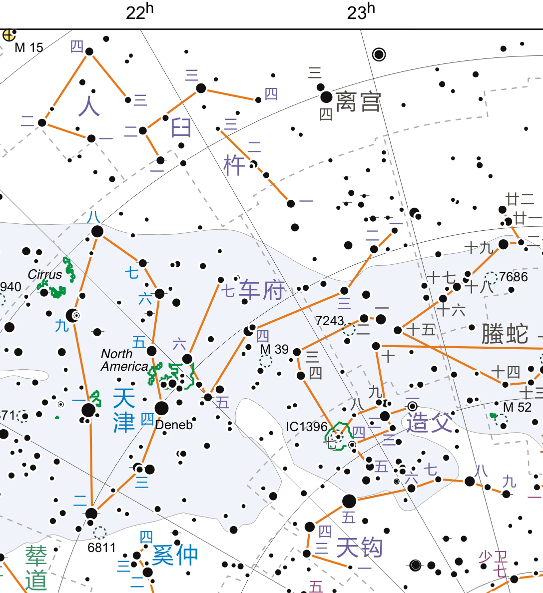
室宿(Encampment Mansion)
- 离宫(Resting palace)，螣蛇(Flying serpent)，雷电(Thunder and lightning)，土公吏(Official for materials supply)，垒壁阵(The line of ramparts)，羽林军(Palace guard)，鈇钺(Axe)，八魁(Net for catching birds)
- 天纲(Materials for Making Tents)，北落师门(North gate of the military camp)
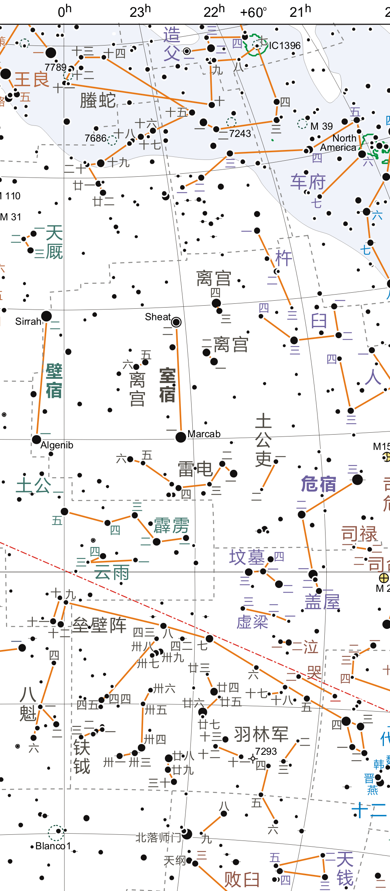
壁宿(Wall Mansion)
- 天厩(Celestial stable)，土公(Official for earthworks and buildings)，霹雳(Thunderbolt)，云雨(Cloud and rain)，鈇锧(Sickle)
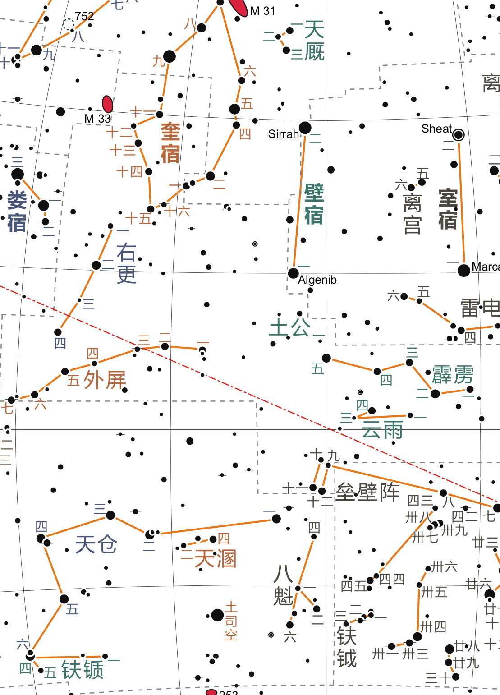
西方白虎(White Tiger of the West)
奎宿(Legs Mansion)
- 王良(WANGLIANG)，阁道(Flying corridor)，外屏(Outer fence)，天溷(Celestial pigsty)
- 策(Whip)，附路(Auxiliary road)，军南门(Southern military gate)，土司空(Master of constructions)
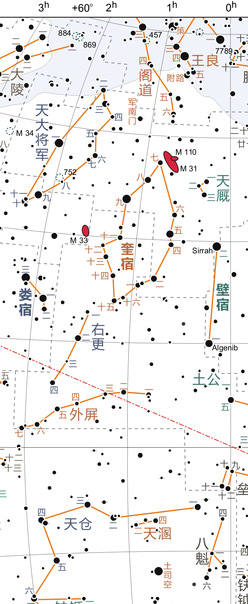
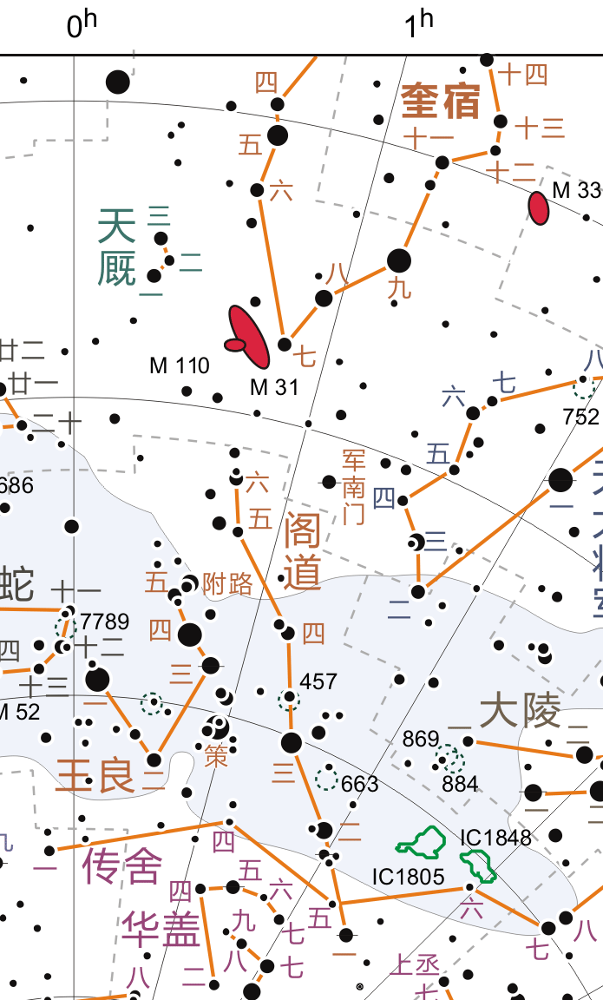
娄宿(Bond Mansion)
- 天大将军(Great general of the heaven)，右更(Official in charge of pasturing)，左更(Official in charge of forest)，天仓(Square celestial granary)，天庾(Ricks of grain)
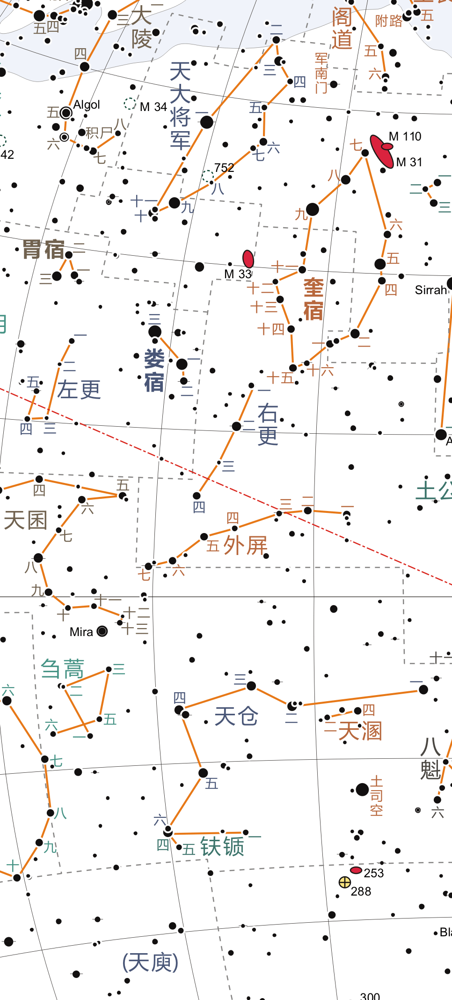
胃宿(Stomach Mansion)
- 大陵(Mausoleum)，天船(Celestial boat)，天廪(Celestial foodstuffs)，天囷(Circular celestial granary)
- 积尸(Heaps of corpses)，积水(Stored water)
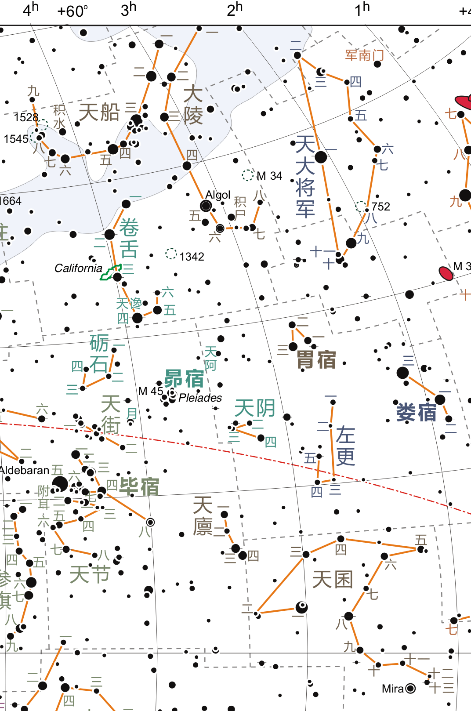
昴宿(Hairy Head Mansion)
- 卷舌(Rolled tongue)，砺石(Whetstone)，天阴(Celestial YIN force)，刍蒿(Hay)，天苑(Celestial meadows)
- 天阿(Celestial river)，月(Moon)，天谗(Celestial slander)
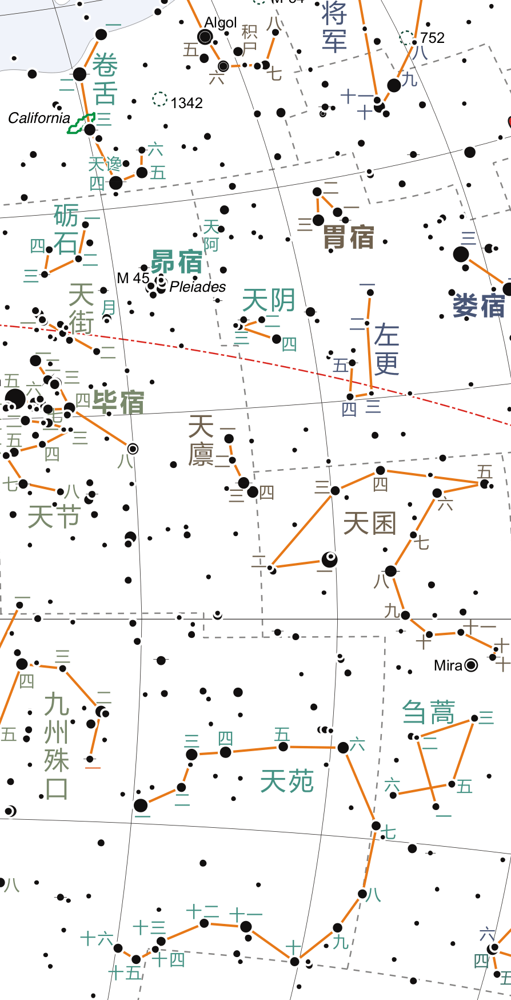
毕宿(Net Mansion)
- 天街(Celestial street)，天高(Celestial high terrace)，诸王(Feudal kings)，五车(Five chariots)，柱(Pillars)，咸池(Pool of harmony)，天潢(Celestial pier)，天节(Celestial tally)，九州殊口(Interpreters of nine dialects)，参旗(Banner of three stars)，九斿(Imperial military flag)，天园(Celestial orchard)
- 附耳(Whisper)，天关(Celestial gate)
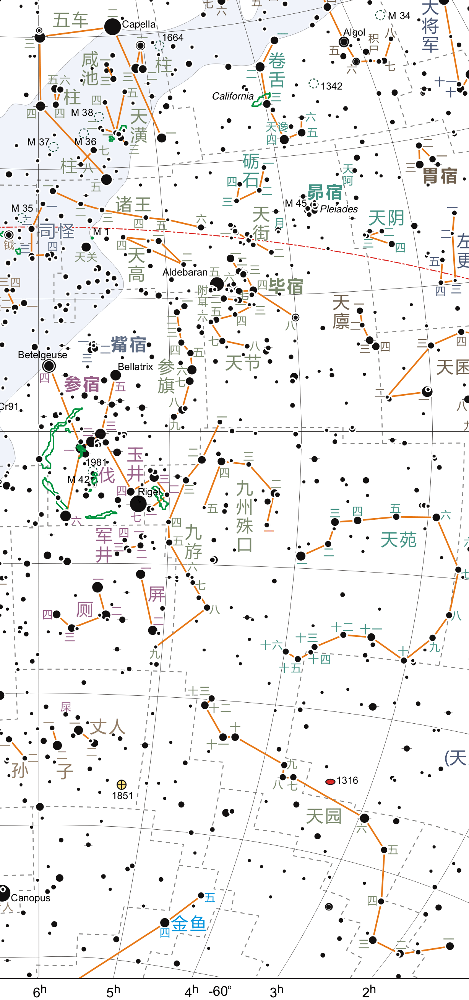
觜宿(Turtle Beak Mansion)
- 司怪(Deity in charge of monsters)，座旗(Seat flags)
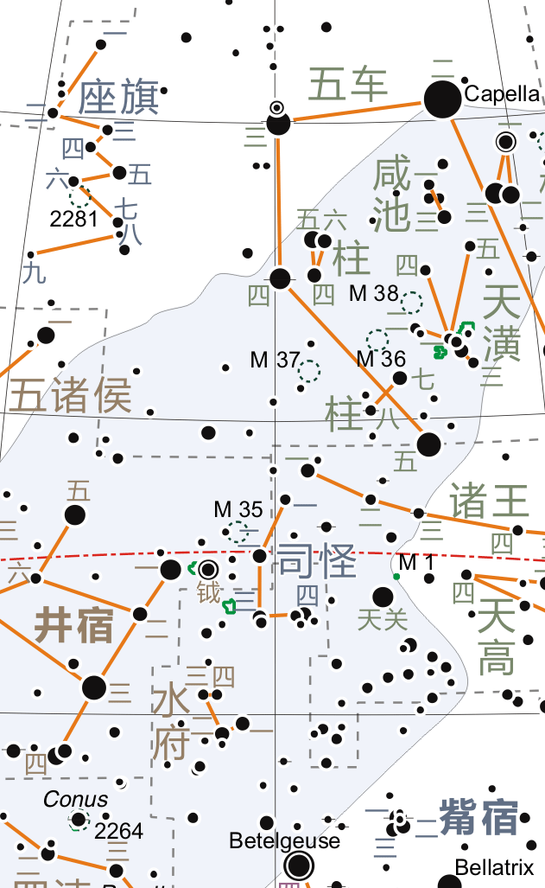
参宿(Three Stars Mansion)
- 伐(Punishment)，玉井(Jade well)，军井(Military well)，屏(Screen)，厕(Toilet)
- 屎(Excrement)
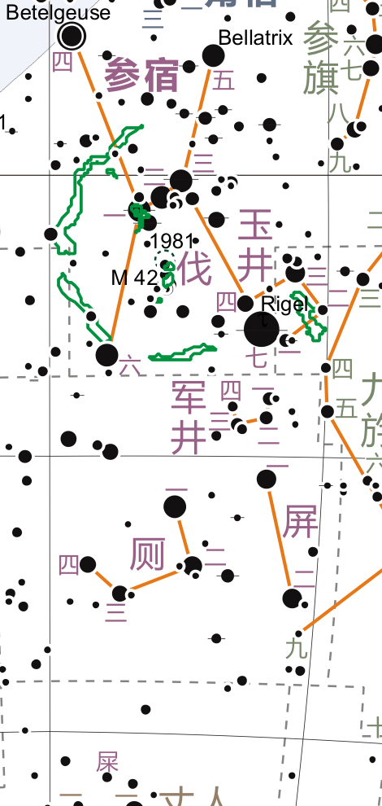
南方朱雀(Vermilion Bird of the South)
井宿(Well Mansion)
- 水府(Official for irrigation)，天樽(Celestial wine cup)，五诸侯(Five feudal kings)，北河(North river)，水位(Water level)，南河(South river)，四渎(Four channels)，阙丘(Palace gate)，军市(Market for the soldiers)，丈人(Grandfather)，子(Son)，孙(Grandson)，弧矢(Bow and arrow)
- 钺(Battle axe)，积水(Accumulated water)，积薪(Pile of firewood)，野鸡(Wild cockerel)，天狼(Celestial wolf)，老人(Old man)
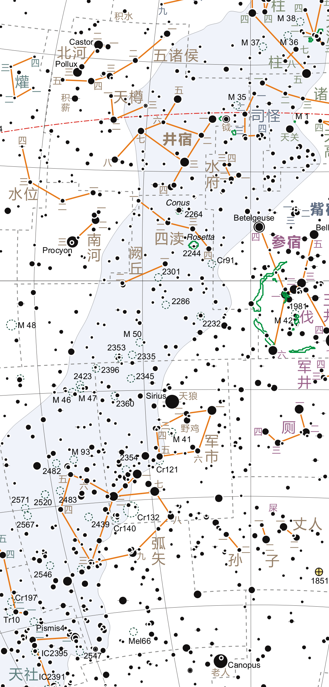
鬼宿(Ghosts Mansion)
- 爟(Beacon fire)，外厨(Outer kitchen)，天狗(Celestial dog)，天社(Celestial earth god's temple)
- 积尸(Cumulative corpses)，天记(Judge to estimate the age of animals)
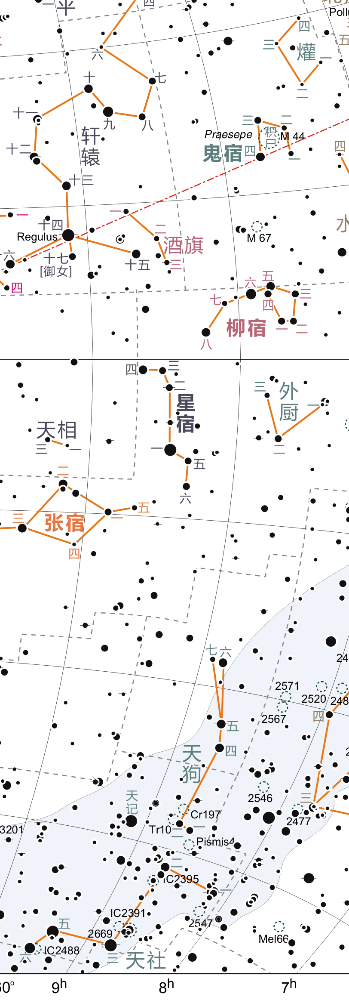
柳宿(Willow Mansion)
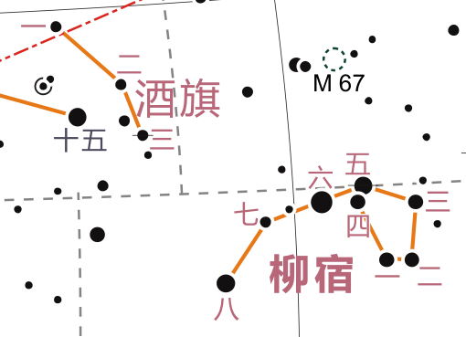
星宿(Star Mansion)
- 天相(Celestial premier)，轩辕(XUANYUAN)，内平(High judge)，天稷*(Celestial cereals)
- 御女(Maids-in-waiting)
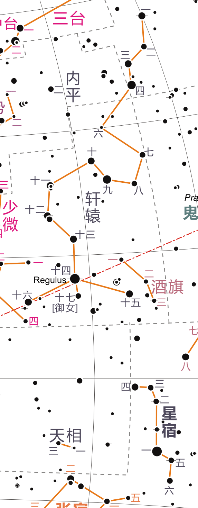
张宿(Extended Net Mansion)
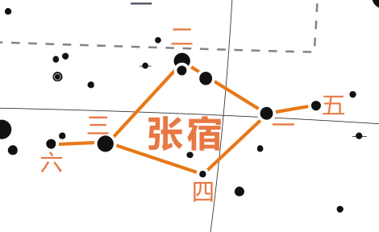
翼宿(Wings Mansion)
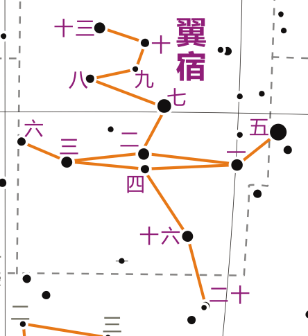
轸宿(Chariot Mansion)
- 青丘(Green hill)，军门*(Military Gate)，土司空*(Master of Construction)，器府*(House for Musical Instruments)
- 右辖(Right linchpin)，左辖(Left linchpin)，长沙(CHANGSHA)
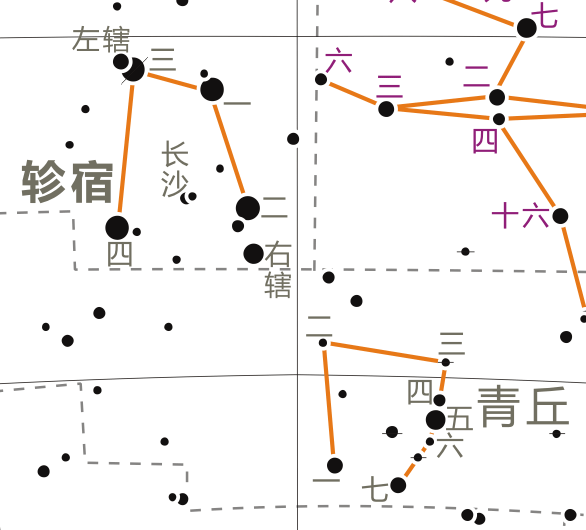
南极星区(Southern Sky)
- 海山(Sea and mountain)，十字架(Cross)，马尾(Horse's tail)，马腹(Horse's abdomen)，蜜蜂(Bee)，三角形(Triangle)，异雀(Exotic bird)，孔雀(Peacock)，波斯(Persia)，蛇尾(Snake's tail)，蛇腹(Snake's abdomen)，蛇首(Snake's head)，鸟喙(Bird's beak)，鹤(Crane)，火鸟(Firebird)，水委(Crooked running water)，附白(White patches nearby)，夹白(White Patch attached)，金鱼(Goldfish)，海石(Sea rock)，飞鱼(Flying fish)，南船(Southern boat)，小斗(Little dipper)
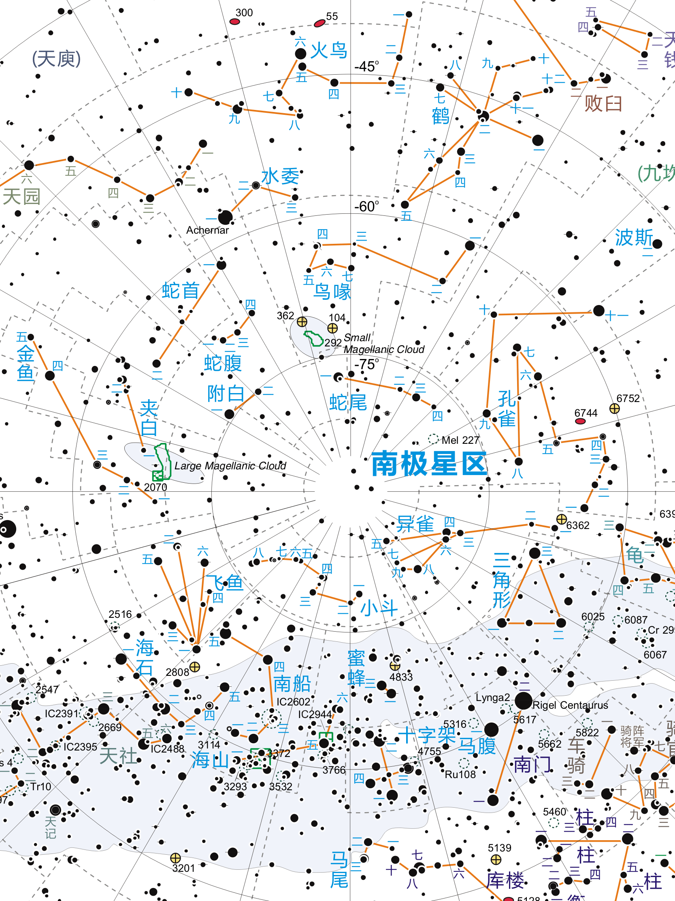